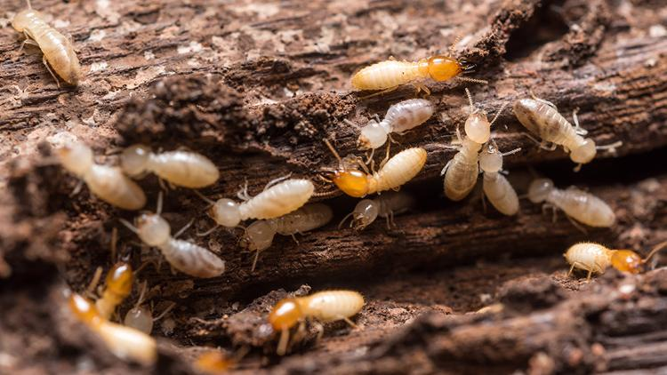

Cupim de madeira
Ataca móveis, forro, telhado e peças estruturais. Vive dentro da própria madeira.
Campo Bom · Vale dos Sinos · Serra Gaúcha
Empresa familiar desde 1986. Cupim de madeira, cupim de solo ou broca: o objetivo é atingir a rainha da colônia, com certificado de execução.

Madeira oca, asa caída no peitoril, pó (serragem) ou trilhas de terra na parede são sinais. Tratar o tipo errado — madeira vs solo — não atinge a rainha e o problema volta.
Ataca móveis, forro, telhado e peças estruturais. Vive dentro da própria madeira.
Vem do chão. Sobe por fundação e paredes. Pede barreira química no solo.
Furos e pó na madeira. O tratamento é localizado, nos orifícios da peça.
Primeiro a equipe identifica se é madeira, solo ou broca. Só então aplica. O objetivo é atingir a rainha — se ela ficar, a colônia recompõe.
Produto injetado nos orifícios da madeira e, quando possível, pulverização em toda a peça atacada.
Perfurações ao redor do local com produto injetado no solo, mais aplicações onde há incidência dentro do imóvel.
Se a rainha (ou as rainhas) não for atingida, o problema pode persistir. Por isso o diagnóstico vem antes da aplicação.
Manda foto do dano, a cidade e se é casa ou empresa. Orçamento é personalizado.
Madeira, solo ou broca. Sem esse passo, o tratamento erra o alvo.
Injeção, pulverização ou barreira no solo, conforme o laudo da equipe.
Todo serviço inclui certificado de execução. Assistência conforme o tipo de cupim e o local.

Sócio-gestor · mais de 15 anos na operação.

Sócia-gestora · atendimento e gestão da empresa.
A equipe identifica no local. Madeira/broca ataca a peça; solo vem do chão e pede barreira química. Mande uma foto no WhatsApp para agilizar.
Orçamento personalizado: depende da espécie, da área e do acesso. Não tem tabela no site. Chame no WhatsApp com a cidade e o que você viu.
O alvo é a rainha da colônia. Se ela não for atingida, o problema pode voltar. Tempo de execução e assistência variam conforme o serviço.
Sim. Residências, empresas e imóveis novos. Prevenção em obra também entra no orçamento.
Manda uma foto do dano e a cidade. A equipe da Imunisinos identifica o tipo de cupim e monta o orçamento.
Quero orçamento no WhatsApp